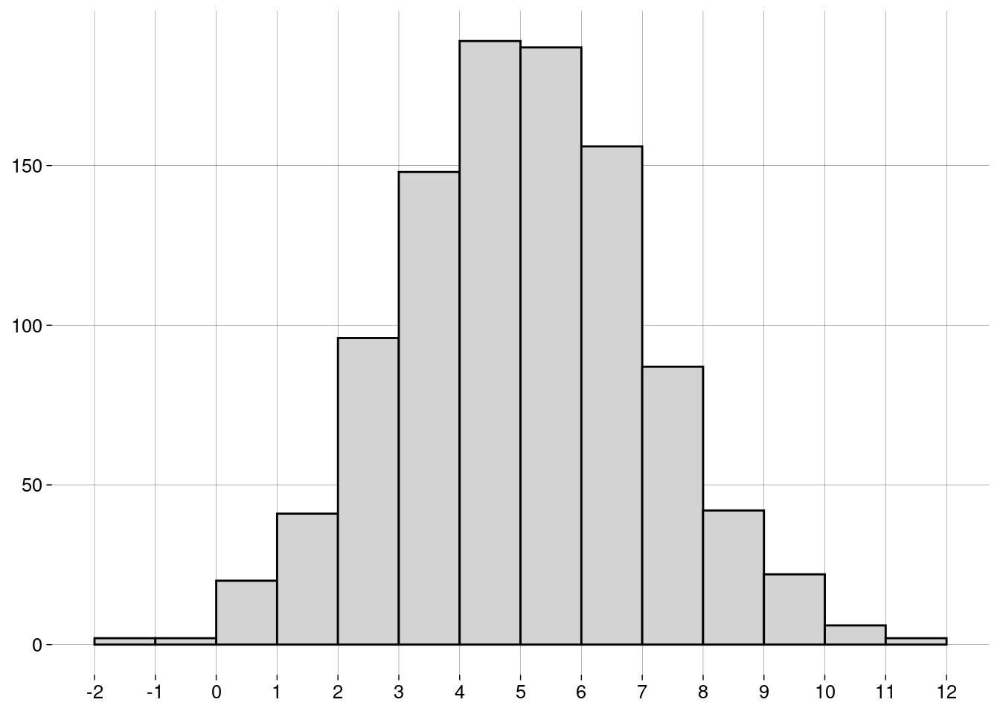
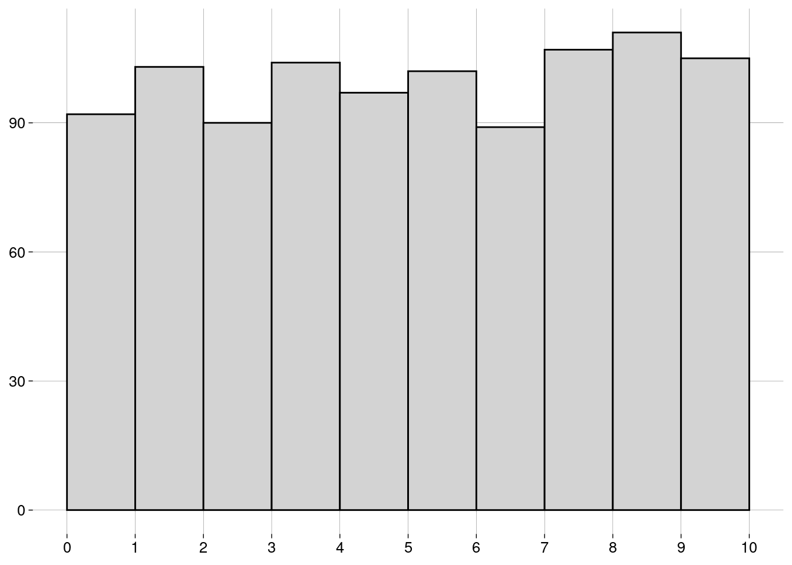

Capítulo 6 Medidas
6.2 Medidas de centralidade
6.2.1 Média
-
A média de uma população é escrita como \(\mu\), e é definida como \[\mu = \frac{\sum_{i=1}^N x_i}{N}\]
\(\sum_{i=1}^N x_i\) é a soma de todos os dados da população.
\(N\) é a quantidade de elementos na população.
-
A média de uma amostra é escrita como \(\bar x\), e é definida como: \[\bar x = \frac{\sum_{i=1}^n x_i}{n}\]
\(\sum_{i=1}^n x_i\) é a soma de todos os dados da amostra.
\(n\) é a quantidade de elementos na amostra.
O cálculo é essencialmente o mesmo. Só mudam os símbolos: \(N\) versus \(n\), e \(\mu\) versus \(\bar x\).
6.2.2 Mediana
Já aprendemos sobre a mediana na seção sobre boxplots.
A idéia é que, depois de ordenar os dados, \(50\%\) dos dados estarão à esquerda da mediana, e \(50\%\) à direita.
A mediana não é tão sensível a outliers quanto à média.
6.2.3 Moda
A moda é o valor mais frequente do conjunto de dados.
Pode haver mais de uma moda.
Não existe uma função para a moda em R base. Por quê?
Por incrível que pareça, é complicado definir a moda de forma a conseguir resultados interessantes.
-
Por exemplo, vamos definir um conjunto de \(1000\) valores numéricos distribuídos normalmente4, com média igual a \(5\) e desvio-padrão5 igual a \(2\):
normal <- rnorm(1000, mean = 5, sd = 2) -
O histograma dos nossos dados é
 -
Vamos calcular a moda com a função
mfv(most frequent value), do pacotemodeest:## Registered S3 method overwritten by 'rmutil': ## method from ## print.response httr# Por causa de um bug na função mfv, # precisamos de números com ponto decimal # (em vez de vírgula): options(OutDec = '.') mfv(normal)## [1] -2.3188781 -2.0074803 -1.7358539 -0.4930544 0.2003931 0.2673933 0.3204605 ## [8] 0.3909415 0.3932377 0.4066826 0.4099680 0.4619219 0.5092464 0.5497853 ## [15] 0.5948753 0.7264704 0.8642384 0.9029634 0.9173812 0.9393525 0.9603498 ## [22] 0.9885383 1.0718544 1.1049956 1.1215207 1.2688835 1.3017605 1.3979765 ## [29] 1.4473040 1.4571868 1.5187081 1.5235841 1.5462407 1.5485114 1.5643337 ## [36] 1.6075278 1.6235864 1.6358078 1.6361784 1.6368897 1.6995004 1.7018761 ## [43] 1.7024483 1.7340302 1.7386672 1.7417110 1.7500970 1.7582984 1.7604477 ## [50] 1.7801353 1.7936571 1.8166247 1.8641014 1.8930120 1.9022827 1.9683251 ## [57] 2.0286472 2.0332677 2.0718354 2.0734131 2.0996562 2.1068111 2.1283293 ## [64] 2.1384223 2.1443432 2.1465940 2.1624945 2.1704088 2.1744473 2.1806607 ## [71] 2.1841063 2.1878199 2.1984406 2.1984866 2.2110899 2.2217710 2.2285172 ## [78] 2.2398816 2.2596197 2.2726953 2.2914212 2.3062752 2.3106905 2.3166108 ## [85] 2.3393986 2.3403924 2.3482670 2.3503761 2.3691606 2.3722341 2.3728400 ## [92] 2.3991022 2.4125303 2.4426056 2.4646097 2.4686666 2.4818273 2.5155682 ## [99] 2.5387338 2.5446167 2.5725374 2.5761014 2.5844413 2.6024012 2.6125331 ## [106] 2.6142482 2.6218308 2.6247650 2.6297377 2.6402540 2.6512103 2.6612937 ## [113] 2.6822589 2.6841545 2.6846992 2.6923983 2.6938199 2.6976452 2.7016362 ## [120] 2.7380033 2.7401051 2.7495516 2.7568783 2.7637366 2.7879538 2.8039671 ## [127] 2.8080540 2.8142109 2.8192914 2.8221059 2.8232196 2.8254625 2.8292111 ## [134] 2.8510006 2.8635729 2.8676988 2.8765544 2.8833606 2.8850009 2.8883061 ## [141] 2.8888947 2.9028101 2.9034103 2.9056645 2.9076298 2.9408879 2.9473397 ## [148] 2.9539322 2.9916455 3.0135541 3.0191500 3.0195584 3.0295750 3.0332569 ## [155] 3.0442766 3.0446810 3.0459182 3.0571494 3.0577182 3.0586818 3.0606350 ## [162] 3.0696514 3.0775082 3.0777279 3.0825179 3.1020999 3.1045965 3.1071100 ## [169] 3.1076011 3.1204734 3.1232077 3.1364218 3.1375793 3.1526740 3.1573784 ## [176] 3.1637435 3.1641172 3.1919085 3.2120782 3.2165051 3.2196217 3.2231951 ## [183] 3.2325443 3.2338240 3.2347162 3.2377882 3.2508565 3.2539032 3.2734915 ## [190] 3.2736526 3.2746151 3.2878590 3.2933132 3.3009704 3.3026888 3.3126993 ## [197] 3.3130084 3.3201806 3.3230610 3.3303620 3.3357104 3.3521067 3.3685488 ## [204] 3.3840201 3.3875358 3.3902759 3.3955968 3.4001869 3.4067965 3.4199631 ## [211] 3.4216306 3.4307732 3.4353674 3.4370820 3.4459246 3.4460271 3.4485678 ## [218] 3.4516143 3.4584874 3.4845304 3.4859204 3.4864173 3.4908397 3.4941497 ## [225] 3.5076566 3.5163718 3.5188067 3.5253641 3.5261794 3.5263670 3.5425055 ## [232] 3.5482863 3.5523255 3.5546581 3.5587417 3.5632410 3.5656960 3.5664311 ## [239] 3.5667173 3.5704847 3.5712251 3.5748720 3.5778078 3.5829211 3.5865427 ## [246] 3.5874077 3.5996033 3.6020268 3.6110807 3.6222846 3.6251728 3.6329212 ## [253] 3.6342499 3.6346985 3.6498591 3.6549471 3.6642632 3.6704005 3.6884423 ## [260] 3.6890808 3.6893348 3.6906673 3.6916920 3.7145255 3.7153300 3.7156695 ## [267] 3.7197104 3.7323929 3.7591098 3.7606443 3.7644953 3.7665070 3.7728609 ## [274] 3.7745202 3.7817787 3.7820827 3.7842432 3.7977933 3.8049402 3.8116834 ## [281] 3.8119429 3.8224523 3.8323335 3.8385641 3.8395431 3.8410815 3.8410878 ## [288] 3.8485592 3.8487838 3.8536547 3.8595380 3.8643913 3.8780599 3.8829576 ## [295] 3.8839501 3.8881583 3.8903295 3.8993996 3.9002319 3.9047606 3.9137128 ## [302] 3.9157080 3.9166719 3.9227004 3.9317017 3.9353393 3.9386853 3.9414448 ## [309] 3.9616212 3.9663029 3.9753753 3.9783471 3.9797426 3.9805024 3.9806664 ## [316] 4.0035755 4.0043493 4.0061126 4.0077636 4.0087371 4.0169512 4.0176328 ## [323] 4.0178744 4.0241098 4.0245509 4.0283747 4.0315495 4.0325741 4.0476248 ## [330] 4.0679705 4.0716500 4.0770144 4.0779184 4.0783654 4.0814355 4.0815118 ## [337] 4.0824225 4.0987775 4.1068717 4.1082067 4.1094086 4.1102500 4.1110059 ## [344] 4.1220908 4.1305505 4.1392154 4.1484936 4.1554554 4.1597797 4.1667861 ## [351] 4.1814151 4.1847860 4.1848142 4.2137880 4.2150314 4.2397829 4.2460704 ## [358] 4.2562602 4.2626042 4.2758142 4.2791554 4.2851622 4.2889650 4.2920622 ## [365] 4.2986778 4.2996418 4.3043146 4.3092415 4.3158724 4.3217478 4.3297976 ## [372] 4.3340405 4.3353180 4.3388970 4.3420456 4.3513208 4.3559661 4.3644422 ## [379] 4.3649151 4.3688482 4.3709790 4.3721409 4.3750527 4.3769699 4.3778595 ## [386] 4.3809567 4.3820258 4.3854635 4.3865712 4.3902953 4.3973101 4.3976135 ## [393] 4.4014004 4.4078229 4.4079889 4.4190415 4.4197229 4.4215806 4.4297536 ## [400] 4.4318189 4.4405294 4.4455077 4.4570256 4.4577308 4.4612979 4.4667349 ## [407] 4.4868916 4.4900381 4.4990760 4.5108284 4.5136365 4.5188280 4.5375585 ## [414] 4.5390650 4.5408888 4.5516169 4.5558072 4.5564552 4.5577525 4.5623630 ## [421] 4.5623922 4.5636663 4.5653796 4.5750568 4.5784542 4.5787692 4.5800808 ## [428] 4.5867897 4.5926638 4.6051282 4.6062745 4.6136784 4.6205498 4.6206939 ## [435] 4.6231163 4.6246986 4.6258463 4.6286372 4.6344528 4.6350320 4.6424230 ## [442] 4.6479739 4.6497890 4.6531425 4.6548710 4.6564312 4.6581010 4.6585358 ## [449] 4.6623362 4.6645549 4.6690640 4.6692999 4.6792358 4.6830150 4.6861345 ## [456] 4.6903817 4.6926388 4.6939348 4.6969506 4.6998436 4.7120374 4.7124130 ## [463] 4.7149329 4.7185969 4.7208138 4.7241322 4.7265717 4.7295931 4.7422395 ## [470] 4.7477589 4.7481493 4.7570074 4.7573205 4.7615695 4.7671452 4.7711723 ## [477] 4.7819161 4.7890737 4.7900610 4.7942829 4.8129805 4.8218405 4.8252342 ## [484] 4.8276252 4.8304573 4.8321102 4.8342496 4.8346732 4.8417369 4.8452741 ## [491] 4.8457065 4.8468972 4.8503996 4.8541086 4.8558380 4.8619015 4.8671286 ## [498] 4.8729632 4.8796517 4.8920444 4.8949656 4.8985346 4.9008797 4.9043121 ## [505] 4.9078077 4.9170448 4.9172197 4.9221735 4.9324864 4.9347990 4.9483089 ## [512] 4.9491411 4.9577572 4.9587759 4.9819350 4.9845251 4.9891236 4.9987815 ## [519] 5.0043727 5.0058099 5.0204843 5.0212738 5.0257585 5.0337710 5.0427869 ## [526] 5.0644725 5.0740285 5.0825581 5.0853822 5.0911873 5.0923995 5.0980330 ## [533] 5.1048327 5.1232093 5.1331999 5.1358912 5.1364523 5.1400510 5.1549278 ## [540] 5.1627629 5.1630430 5.1647481 5.1668312 5.1677434 5.1850837 5.1886039 ## [547] 5.1918155 5.1918919 5.1970425 5.2012256 5.2017391 5.2034799 5.2060159 ## [554] 5.2094752 5.2131788 5.2188932 5.2273381 5.2307957 5.2328636 5.2363830 ## [561] 5.2372619 5.2415589 5.2505280 5.2515009 5.2636254 5.2639177 5.2654379 ## [568] 5.2672895 5.2677109 5.2731334 5.2934441 5.2961089 5.2988565 5.3024186 ## [575] 5.3080489 5.3097779 5.3192132 5.3236743 5.3280220 5.3282792 5.3290257 ## [582] 5.3301280 5.3327706 5.3345108 5.3369085 5.3441722 5.3455312 5.3470979 ## [589] 5.3499633 5.3499687 5.3628803 5.3652922 5.3676800 5.3715198 5.3785408 ## [596] 5.3903956 5.3918178 5.3968922 5.4033585 5.4059137 5.4072678 5.4115926 ## [603] 5.4145315 5.4149179 5.4272113 5.4297607 5.4297979 5.4354619 5.4664918 ## [610] 5.4762282 5.4793164 5.4857843 5.5006601 5.5064147 5.5108336 5.5150521 ## [617] 5.5223892 5.5227560 5.5351234 5.5474632 5.5492239 5.5502402 5.5648297 ## [624] 5.5670276 5.5701369 5.5799724 5.5819834 5.5829341 5.5892940 5.5990119 ## [631] 5.6008947 5.6176811 5.6224050 5.6340430 5.6361990 5.6374537 5.6397680 ## [638] 5.6459287 5.6484802 5.6498030 5.6532086 5.6552622 5.6763609 5.6803693 ## [645] 5.6914895 5.6938442 5.6942469 5.6961555 5.7093715 5.7181324 5.7182680 ## [652] 5.7224377 5.7256215 5.7259149 5.7325353 5.7343353 5.7371427 5.7383493 ## [659] 5.7397376 5.7537145 5.7544819 5.7599855 5.7806345 5.7816585 5.7892692 ## [666] 5.7903127 5.8028090 5.8057973 5.8095055 5.8098774 5.8160256 5.8211637 ## [673] 5.8316527 5.8379865 5.8386646 5.8596867 5.8702428 5.8721100 5.8824138 ## [680] 5.8839282 5.8852581 5.8867915 5.9002719 5.9193393 5.9205484 5.9250199 ## [687] 5.9262402 5.9332593 5.9492513 5.9527318 5.9549104 5.9625080 5.9735431 ## [694] 5.9810899 5.9934273 5.9949142 6.0099642 6.0106471 6.0185679 6.0310709 ## [701] 6.0322923 6.0336901 6.0410806 6.0425572 6.0475143 6.0515044 6.0529878 ## [708] 6.0677370 6.0730103 6.0756268 6.0758219 6.0825835 6.0828136 6.0836054 ## [715] 6.0884549 6.1006420 6.1007427 6.1046931 6.1083029 6.1123161 6.1221822 ## [722] 6.1307798 6.1504999 6.1528561 6.1681372 6.1759524 6.1771193 6.1797383 ## [729] 6.1830421 6.1838236 6.1894262 6.1986985 6.1989768 6.1993708 6.2004860 ## [736] 6.2087191 6.2103038 6.2105764 6.2131411 6.2154378 6.2250348 6.2268222 ## [743] 6.2295240 6.2314304 6.2321431 6.2321457 6.2352954 6.2426973 6.2489819 ## [750] 6.2535273 6.2604667 6.2627996 6.2833898 6.2962180 6.3123202 6.3137546 ## [757] 6.3158456 6.3164520 6.3325734 6.3430082 6.3452691 6.3510764 6.3890785 ## [764] 6.3896516 6.3912240 6.4126256 6.4157779 6.4255386 6.4399089 6.4459855 ## [771] 6.4487110 6.4564982 6.4648284 6.4654059 6.4809678 6.4869701 6.4981714 ## [778] 6.5022977 6.5199667 6.5266559 6.5336140 6.5384654 6.5428003 6.5493633 ## [785] 6.5547297 6.5805516 6.5965028 6.5995831 6.5998420 6.6016339 6.6104140 ## [792] 6.6128777 6.6160455 6.6169330 6.6170458 6.6264653 6.6346704 6.6470800 ## [799] 6.6577012 6.6706245 6.6727079 6.6728756 6.6750886 6.6855609 6.6859024 ## [806] 6.6888854 6.6906015 6.7024211 6.7031949 6.7051207 6.7112492 6.7144174 ## [813] 6.7151023 6.7305822 6.7442249 6.7503449 6.7535544 6.7953211 6.8103882 ## [820] 6.8323079 6.8339865 6.8344685 6.8357809 6.8768627 6.8822479 6.8831539 ## [827] 6.8867630 6.8937785 6.9042344 6.9078320 6.9226793 6.9252220 6.9324997 ## [834] 6.9331837 6.9336651 6.9354421 6.9407137 6.9438962 6.9461200 6.9879947 ## [841] 6.9974887 7.0000317 7.0066334 7.0095136 7.0139316 7.0144438 7.0189190 ## [848] 7.0495266 7.0577003 7.0808057 7.0814220 7.0829762 7.0853711 7.1051653 ## [855] 7.1070354 7.1084472 7.1331109 7.1413627 7.1453976 7.1679275 7.1732274 ## [862] 7.1744668 7.1864187 7.1865487 7.1874110 7.1886075 7.1969838 7.2083840 ## [869] 7.2164347 7.2176128 7.2289188 7.2433380 7.2557794 7.2641095 7.2645455 ## [876] 7.2710095 7.2736800 7.2789315 7.2966384 7.2977005 7.3002001 7.3116683 ## [883] 7.3166951 7.3227076 7.3234359 7.3254131 7.3480862 7.3654543 7.3757116 ## [890] 7.3859585 7.4040886 7.4083434 7.4222295 7.4262301 7.4281278 7.4577017 ## [897] 7.4597918 7.4747542 7.4935251 7.4998197 7.5107591 7.5238209 7.5437773 ## [904] 7.5534126 7.5605972 7.5627154 7.5632827 7.5659188 7.5709619 7.5714830 ## [911] 7.5724114 7.5977923 7.6009977 7.6094262 7.6175453 7.6344846 7.6638779 ## [918] 7.6844218 7.6952770 7.7218871 7.7272498 7.7299731 7.7334083 7.7440146 ## [925] 7.8087493 7.8189092 7.8216433 7.8256856 7.8417201 7.8468040 7.8617841 ## [932] 7.8763666 7.8955472 7.9004655 7.9016296 7.9041343 7.9089475 7.9656817 ## [939] 7.9777226 7.9874853 7.9878738 7.9953591 8.0074832 8.0081715 8.0187920 ## [946] 8.0346772 8.0399404 8.0501405 8.0661573 8.0690647 8.0762702 8.0801774 ## [953] 8.0991364 8.1179720 8.1285716 8.1441473 8.1483074 8.1517142 8.1595349 ## [960] 8.1705353 8.1720510 8.1843509 8.1872721 8.1890105 8.2523957 8.2712656 ## [967] 8.3400452 8.3418294 8.3507351 8.3537813 8.4232836 8.4546363 8.5358012 ## [974] 8.6235966 8.6373034 8.6394914 8.6396857 8.6456098 8.6751710 8.8013817 ## [981] 8.8117725 8.8689682 8.9881444 9.0011023 9.1348160 9.1776098 9.2732221 ## [988] 9.2841118 9.3471170 9.4995862 9.5070701 9.5322219 9.5735777 9.6608252 ## [995] 9.6770936 9.8783619 9.9029457 10.1093340 10.3055583 10.6785180# Voltamos para a vírgula como separador decimal: options(OutDec = ',') O que houve?!
O problema é que não há valores repetidos no conjunto de dados! Por isso, todos os \(1000\) valores são modais.
-
Uma maneira de evitar isto é definir a moda como o centro do intervalo mais curto que contém metade dos dados. Usamos a função
mlv(most likely value):moda <- mlv(normal, method = 'venter') moda## [1] 4,796417 -
Esta moda estimada pode nem estar no conjunto de dados:
moda %in% normal## [1] FALSE Mas o resultado de
mlv()é útil, pois nos diz que, embora não haja valores repetidos, valores próximos de \(5\) são mais frequentes, como mostra o histograma.
6.2.3.1 Exercícios
-
Arrendonde os valores no vetor
normalpara \(2\) casas decimais e ache a(s) moda(s)com a função
mfv, ecom a função
mlv, usando o métodoventer.
Considerando o histograma, qual das respostas você prefere? Por quê?
6.3 Formas de uma distribuição
- A forma do histograma mostra aspectos importantes da distribuição dos dados.
6.3.1 Distribuição Uniforme
-
Se o histograma tem todas as barras aproximadamente da mesma altura, dizemos que a distribuição é uniforme:
 A distribuição uniforme não tem moda, já que todos os valores têm aproximadamente a mesma frequência.
6.3.2 Simetria
Se o histograma for simétrico (i.e., os lados esquerdo e direito são “espelhados”), dizemos que a distribuição é simétrica.
A distribuição normal do exemplo acima é simétrica.
A distribuição uniforme também é simétrica.
-
Para distribuições simétricas, a média, a mediana e a moda (quando existe e é única) são bem próximas.
-
Uma distribuição pode ser simétrica, mas ter duas (ou mais) modas diferentes:

Algumas distribuições não são simétricas, mas têm uma cauda longa à esquerda ou à direita.
Dependendo da cauda, as distribuições são chamadas de assimétricas à esquerda ou assimétricas à direita.
-
Um exemplo: receitas anuais (em milhões de dólares) de CEOs de grandes empresas:
## Rows: 500 ## Columns: 9 ## $ Rank <dbl> 1, 2, 3, 4, 5, 6, 7, 8, 9, 10, 11, 12, 13, 14, 15, 16… ## $ Name <chr> "John H Hammergren", "Ralph Lauren", "Michael D Fasci… ## $ Company <chr> "McKesson", "Ralph Lauren", "Vornado Realty", "Kinder… ## $ `1-Year Pay ($mil)` <dbl> 131,190, 66,650, 64,405, 60,940, 55,790, 51,525, 50,1… ## $ `5 Year Pay ($mil)` <dbl> 285,020, 204,060, NA, 60,940, 96,110, 100,210, 90,300… ## $ `Shares Owned ($mil)` <dbl> 51,9, 5010,4, 171,7, 8582,3, 21,5, 47,3, 128,2, 155,8… ## $ Age <dbl> 53, 72, 55, 67, 59, 57, 55, 59, 61, 60, 59, 56, 63, 5… ## $ Efficiency <dbl> 121, 84, NA, NA, 138, 36, 12, NA, 91, 131, 150, NA, 1… ## $ `Log Pay` <dbl> 8,117901, 7,823800, 7,808920, 7,784902, 7,746556, 7,7… -
Vamos usar apenas os nomes e os valores anuais:
-
Um histograma:
salarios %>% ggplot(aes(x = valor)) + geom_histogram(breaks = seq(0, 150, 2.5)) + scale_x_continuous(breaks = seq(0, 150, 10)) + labs(y = NULL)
É uma distribuição assimétrica à direita: a maior parte dos CEOs têm receitas anuais “baixas”, de menos de \(10\) milhões. À medida que examinamos valores maiores, a quantidade de CEOs vai diminuindo lentamente.
Observe que a longa cauda à direita “puxa” a média para um valor mais alto do que a mediana.
-
A moda, que corresponde à barra mais alta do histograma, é menor que a mediana (e que a média):
sumario <- salarios %>% summarise( moda = mlv(valor, method = 'venter'), mediana = median(valor), media = mean(valor) ) sumario -
Em um boxplot, também é possível detectar a assimetria pela grande quantidade de outliers em um extremo:
salarios %>% ggplot(aes(y = valor)) + geom_boxplot() + scale_x_continuous(breaks = NULL) + scale_y_continuous(breaks = seq(0, 150, 10))
Com distribuições assimétricas à esquerda, a situação se inverte: a média é menor que a mediana, que é menor que a moda.
6.4 Re-expressão
Muitas vezes, é recomendável transformar a escala dos dados para que uma distribuição assimétrica se torne simétrica.
-
No exemplo das receitas dos CEOs, podemos tomar os logaritmos dos valores, em vez dos valores:
salarios_log %>% ggplot(aes(x = log_valor)) + geom_histogram(bins = 20) + labs( x = TeX('$\\log_{10}$ valor'), y = NULL )## Warning: Removed 3 rows containing non-finite values (`stat_bin()`).
O logaritmo de um número na base \(10\) é, essencialmente, a quantidade de dígitos do número, vista como uma grandeza contínua.
Logaritmos negativos vêm de valores entre \(0\) e \(1\).
Logaritmo zero vem do valor \(1\).
Valores iguais ou menores que zero não têm logaritmo definido.
-
Por isso a mensagem de aviso sobre \(3\) valores removidos. São valores iguais a zero:
Uma vantagem desta escala logarítmica é que podemos entender melhor o histograma. Os dados não estão amontoados de um lado só.
6.5 Medidas de posição
6.5.1 Quantis
Na seção sobre boxplots, falamos sobre quantis, que são medidas de posição.
-
Em R, a função
quantilecalcula quantis de um vetor:## 0% 25% 50% 75% 100% ## 0,00000 3,88500 6,96750 13,36125 131,19000 -
Você pode passar frações entre \(0\) e \(1\) para
quantile. Por exemplo, para calcular o primeiro, o quinto, e o décimo percentis6 das receitas dos CEOs:## 1% 5% 10% ## 0,48695 1,48405 2,19400
6.6 Medidas de dispersão
Tão importantes quanto as medidas de centralidade são as medidas de dispersão (ou espalhamento).
Elas informam o quanto os dados variam.
6.6.1 Amplitude
Uma medida simples é a diferença entre o valor máximo e o valor mínimo.
-
Lembrando do nosso exemplo das idades dos alunos:
idades## [1] 20 20 20 20 20 20 21 21 21 21 22 22 22 23 23 23 23 24 24 65 -
A função
rangeretorna o mínimo e o máximo:range(idades)## [1] 20 65 -
A amplitude destes dados é, então
## [1] 45 A diferença de idade entre o aluno mais novo e o mais velho é de \(45\) anos, um valor alto, por causa do velhinho.
6.6.2 IQR
Na seção sobre boxplots, também falamos sobre o intervalo interquartil (IQR).
-
No boxplot, é a altura da caixa. Para as idades dos alunos:
idades %>% as_tibble() %>% ggplot(aes(y = value)) + geom_boxplot() + scale_x_continuous(breaks = NULL) + scale_y_continuous(breaks = seq(20, 70, 5))
-
O IQR é a diferença entre o primeiro e o terceiro quartis:
summary(idades)## Min. 1st Qu. Median Mean 3rd Qu. Max. ## 20,00 20,00 21,50 23,75 23,00 65,00## [1] 3IQR(idades)## [1] 3 Ou seja, os \(50\%\) centrais dos alunos têm idade entre \(20\) e \(23\) anos, um IQR de \(3\).
É uma variação pequena, porém mais fiel à realidade do que a amplitude, que é alta por causa do velhinho.
Quanto maior o IQR, mais espalhados estão os dados.
6.6.3 Variância
-
Agora, vamos trabalhar com os pesos (kg) e alturas (m) de um time de basquete:
medidas <- tibble( altura = .025 * c(72, 74, 68, 76, 74, 69, 72, 79, 70, 69, 77, 73), peso = 0.45 * c(180, 168, 225, 201, 189, 192, 197, 162, 174, 171, 185, 210) ) medidassummary(medidas$altura)## Min. 1st Qu. Median Mean 3rd Qu. Max. ## 1,700 1,744 1,812 1,819 1,863 1,975summary(medidas$peso)## Min. 1st Qu. Median Mean 3rd Qu. Max. ## 72,90 77,96 84,15 84,53 89,10 101,25 A variância é a maneira mais usada de medir o espalhamento em torno da média.
Para calcular a variância das alturas e a variância dos pesos, precisamos calcular valores intermediários.
-
O desvio de um valor é a diferença entre o valor e a média. O desvio pode ser positivo ou negativo.
d_medidas <- medidas %>% mutate( d_altura = altura - mean(altura), d_peso = peso - mean(peso) ) d_medidas -
Vamos calcular o desvio médio das alturas e o desvio médio dos pesos:
Não foi uma boa idéia. O desvio médio sempre é igual a zero.7 (O R pode mostrar algum valor diferente de zero por causa da precisão limitada dos números de ponto flutuante.)
-
Como resolver isto? Elevando os desvios ao quadrado:
Agora temos os desvios quadrados, que são todos positivos.
-
O desvio quadrado médio vai ser a variância:
Uma vantagem da variância é que outliers (que têm desvios quadrados maiores) contribuem mais do que elementos próximos à média (que têm desvios quadrados menores).
Uma desvantagem da variância é que a sua unidade é o quadrado da unidade dos valores.
Neste exemplo, as unidades são \(m^2\) e \(kg^2\)!
6.6.4 Desvio-padrão
É melhor trabalhar com a raiz quadrada da variância, que chamamos de desvio-padrão.
-
As unidades são as mesmas que as unidades dos dados.
-
Claro que o R tem funções para calcular isso:
varesd(standard deviation):medidas %>% summarize( altura_var = var(altura), altura_dp = sd(altura), peso_var = var(peso), peso_dp = sd(peso) ) Mas os valores são diferentes dos que calculamos. Por quê?
6.6.5 Definições
-
Para uma população com \(N\) elementos e média \(\mu\), a variância é
\[ \sigma^2 = \frac{\sum_{i=1}^N (x_i - \mu)^2}{N} \]
e o desvio-padrão é
\[ \sigma = \sqrt{\frac{\sum_{i=1}^N (x_i - \mu)^2}{N}} \]
-
Para uma amostra com \(n\) elementos e média \(\bar x\), a variância é
\[ s^2 = \frac{\sum_{i=1}^n (x_i - \bar x)^2}{n-1} \]
e o desvio-padrão é
\[ s = \sqrt{\frac{\sum_{i=1}^n (x_i - \bar x)^2}{n -1}} \]
Nós calculamos a versão populacional destas medidas.
R calcula a versão amostral destas medidas.
Reveja os cálculos e entenda a diferença.
Note, também, que as medidas populacionais são representadas por letras gregas — \(\mu\), \(\sigma^2\), \(\sigma\) —, enquanto as medidas amostrais são representadas por letras latinas — \(\bar x\), \(s^2\), \(s\).
Mais adiante no curso, você vai entender por que o denominador da variância amostral é \(n - 1\), em vez de \(n\).
Nada é por acaso, nem mesmo em Estatística.
6.6.6 Exercícios
Quando a variância e o desvio-padrão de um conjunto de dados são iguais a zero?
-
Mostre que o desvio médio de qualquer conjunto de valores é igual a zero.
Ou seja, considere o conjunto
\[ \{x_1, x_2, \ldots, x_n\} \]
e prove que
\[ \sum_{i = 1}^n (x_i - \bar x) = 0 \]
Manipule apenas as variáveis \(x_i\). Não use exemplos, pois eles não provam o enunciado geral.
Dica: lembre que \(\displaystyle \bar x = \frac{\sum_{i = 1}^n x_i}{n}\).
6.7 Coeficiente de variação
Em um conjunto de dados, o desvio-padrão é uma medida importante da variação dos dados.
Mas a unidade do desvio-padrão muda de um conjunto de dados para outro: alturas em metros, pesos em quilos etc.
Podemos eliminar as unidades expressando o desvio-padrão em termos da média.
O resultado é a fração \(\frac{\sigma}{\mu}\) (na população) ou \(\frac{s}{\bar x}\) na amostra.
Esta fração é o coeficiente de variação (CV).
O CV não tem unidades.
-
Para as alturas do exemplo dos jogadores de basquete:
A média das alturas é \(1{,}82\) metros.
O desvio-padrão das alturas é \(0{,}09\) metros.
O CV é aproximadamente \(0{,}0473\).
statip::cv(medidas$altura)## [1] 0,04729982Em outras palavras, para as alturas, um desvio-padrão corresponde a \(4{,}73\%\) da média.
-
Para os pesos:
A média dos pesos é \(84{,}53\) quilos.
O desvio-padrão dos pesos é \(8{,}31\) quilos.
O CV é aproximadamente \(0{,}0983\).
statip::cv(medidas$peso)## [1] 0,09834649Em outras palavras, para os pesos, um desvio-padrão corresponde a \(9{,}83\%\) da média.
Segundo estes valores, a variação dos pesos é cerca de \(2\) vezes maior do que a variação das alturas.
O coeficiente de variação sempre faz sentido para dados do nível racional (veja a definição) — i.e., dados onde o zero é absoluto.
Para dados apenas intervalares, o uso do CV pode levar a conclusões absurdas, como você terá chance de ver no exercício.
6.7.1 Exercícios
-
Considere o seguinte conjunto de temperaturas (em graus Celsius):
celsius <- c(0, 10, 20, 30, 40) -
E as mesmas temperaturas (em graus Fahrenheit):
fahrenheit <- 9 * celsius / 5 + 32 -
Calcule para cada um dos dois vetores acima:
A média,
O desvio-padrão,
O coeficiente de variação.
As temperaturas são as mesmas (apenas em unidades diferentes), mas os CVs são diferentes. Por quê?
-
Agora, convertemos as mesmas temperaturas para a escala Kelvin:
kelvin <- celsius + 273.15 -
E para a escala Rankine:
rankine <- fahrenheit + 459.67 -
Calcule para cada um dos dois vetores acima:
A média,
O desvio-padrão,
O coeficiente de variação.
-
Compare:
As médias de
celsiusekelvin,As médias de
fahrenheiterankine,Os desvios-padrão de
celsiusekelvin,Os desvios-padrão de
fahrenheiterankine,Os coeficientes de variação de
kelvinerankine.
Explique o que houve.
6.8 Escores-padrão
Para qualquer conjunto de dados, a unidade usada é uma escolha arbitrária.
Para alturas, por exemplo, podemos usar metros, centímetros, pés, polegadas etc.
A escolha de unidades é tão arbitrária que podemos escolher uma unidade (que dificilmente vai ter nome) que faça com que a média do conjunto de dados seja zero e que o desvio-padrão seja igual a \(1\).
Isto equivale a tomar, como unidade, o desvio-padrão acima da média.
Os valores, nesta nova unidade, são chamados de escores-padrão.
Dizemos que os valores foram padronizados.
Vamos usar as alturas dos jogadores de basquete.
-
Para fazer a altura média virar zero, basta subtrair, de cada altura, a altura média:
alturas <- medidas$altura mean(alturas)## [1] 1,81875## [1] 0 -
Para fazer o desvio-padrão ser igual a \(1\), basta dividir estes valores pelo desvio-padrão dos dados originais:
sd(alturas)## [1] 0,08602656## [1] 1 -
Tome, por exemplo, o seguinte jogador:
altura <- alturas[1] altura## [1] 1,8## [1] -0,217956Faça as contas: o valor da altura padronizada deste jogador significa que a altura dele está \(0{,}217956\) desvios-padrão abaixo da altura média.
-
No geral:
Se a média for \(\bar x\), e
Se o desvio-padrão for \(s\),
Os escores-padrão \(z_i\) vão ser \[ z_i = \frac{x_i - \bar x}{s} \]
-
Em R, a função
scalefaz isso:medidas <- medidas %>% mutate(altura_padronizada = scale(altura)[,1]) medidas %>% select(altura, altura_padronizada)mean(medidas$altura_padronizada)## [1] -0,000000000000000004610683sd(medidas$altura_padronizada)## [1] 1 A função
scalefoi feita para receber e retornar matrizes. Como estamos trabalhando com vetores, usamosscale(altura)[,1]para tomar apenas a primeira (e única) coluna do resultado.
6.8.1 Exercícios
Por que, quando calculamos as alturas deslocadas divididas pelo desvio-padrão das alturas, temos certeza de que a média dos valores resultantes não mudou?
Padronize os pesos dos jogadores de basquete.
Confira a média e o desvio-padrão dos pesos padronizados.
Crie um scatterplot de peso por altura.
Crie um scatterplot de peso padronizado por altura padronizada.
Compare os dois scatterplots. O que muda de um para outro?
6.9 Teorema de Tchebychev
Grosso modo, quanto mais alto o desvio-padrão, maior é a distância da média até os valores.
Ou seja, quanto menor o desvio-padrão, maior é a proporção de valores que estão próximos à média.
-
O teorema de Tchebychev quantifica esta idéia:
Em qualquer distribuição, a proporção de valores dentro de \(\pm k\) desvios-padrão \((k > 1)\) da média é de, no mínimo \[ 1 - \frac{1}{k^2} \]
6.9.1 Exemplo
-
Lembre-se do conjunto de dados sobre os totais de horas de sono de diversos mamíferos:

-
Média e desvio-padrão:
media <- mean(df$value) media## [1] 10,43373dp <- sd(df$value) dp## [1] 4,450357 -
Qual a proporção de espécies que estão a \(1{,}3\) ou menos desvios-padrão de distância da média?
k <- 1.3 inicio <- media - k * dp inicio## [1] 4,648271fim <- media + k * dp fim## [1] 16,2192 -
O teorema diz que no mínimo a seguinte proporção das espécies está dentro deste intervalo:
proporcao_teorema <- 1 - 1 / k^2 proporcao_teorema## [1] 0,408284 -
Graficamente:

-
Vamos conferir:
## [1] 83## [1] 64proporcao_real <- especies_intervalo / total_especies proporcao_real## [1] 0,7710843 Como o teorema usa apenas a média e o desvio-padrão, e mais nenhuma informação sobre a distribuição dos valores — forma, simetria etc. — o que ele garante é, muitas vezes, mais fraco do que a realidade.
Neste exemplo, o teorema garantia no mínimo \(40{,}83\%\) das espécies a \(1{,}30\) ou menos desvios-padrão de distância da média.
A proporção verdadeira é \(77{,}11\%\) das espécies.
O teorema está certo (claro), mas, sem mais informações sobre a distribuição dos dados, o teorema não pode ser mais preciso.